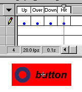

Creating animated buttons


 Downloadable FLA
Downloadable FLA
Animated buttons can really make the difference from a boring site to an exciting site. Here's you animate your buttons.
Step 1. Create a button by pressing F8.
Step 2. You should now see 4 keyframes. Up, Over, Down, Hit.

Step 3. We would now like to create a button that animates when your mouse is over. So create all the keyframes except the "Over" keyframes. Remember: The hitarea, is where you want the button to react to your mouse.
Step 4. Now press F8 and create a Movie Clip.
Step 5. Draw the animation you want to play when the mouse is over, or give your text some fancy effects that animates.
Step 6. Choose the button you created before, and open your library by pressing CTRL + L.
Step 7. Drag the thumbnail of the animation you just created into your "Over" keyframe and place it where you want it to be.
Voila!